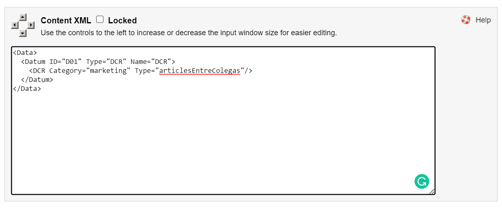

DCR CCPro
Introducción
Un DCR es una solicitud de cambio de datos (En inglés "Data Change Request"). Esta solicitud se genera por medio de un formulario. Este formulario es el DCR.
Hay basicamente 2 formas de crear DCRs y se recomiendan en diferentes situaciones.
-
In-component DCR
El primer tipo de DCR es el más simple. Se define dentro del componente desde CCPro simplemente creando etiquetas de captura de datos o "input tags".
Esta forma de hacerlo no permite reutilizar la información definida por el usuario en otros componentes. Solo existe dentro del componente (no genera un archivo .xml que se pueda leer desde cualquier componente).
Se define directamente en la sección XML del contenido del componente
Ejemplo:
<Data> <Datum ID="D01" Type="String" Name="URL"/> <Datum ID="D02" Type="String" Name="Estilos">width:100%; height:2000px;</Datum> </Data>En este ejemplo se definen dos campos llamados "URL" y "Estilos" que permiten a un/a autor/a editar el componente. Ambos campos son del tipo String
El valor "width:100%; height:2000px;" será un valor por defecto.
DCR Externo
Ubicación
Los DCRs externos se localizan en la siguiente ruta de CCPRO:
//iwserver/default/main/Errepar/WORKAREA/default/templatedataCrear un DCR
Para crear un DCR externo dirigirse a DCR en Experience Studio
Implementar el DCR externo en un componente
-
Dirigirse a CCPRO en la ruta indicada en Componentes
-
Editar un componente o crear uno
- En el formulario de edición/creación de un componente dirigirse al último campo "Content XML" o "XML del Contenido" 
-
Importar el DCR usando el siguiente código
Reemplazar nombreCategoria por la categoria del DCR que es el nombre de la carpeta donde se ubica el content template. Por ejemplo "marketing". Ver Category en Experience Studio
Reemplazar dcrName por el campo name del DCR que es el nombre del content template por ejemplo "articlesEntreColegas"
<Data> <Datum ID="D01" Type="DCR" Name="DCR"> <DCR Category="nombreCategoria" Type="dcrName"/> </Datum> </Data>El atributo Name="DCR" será el valor por el cual acceder al DCR desde el la sección "Aspecto" o sea desde el HTML del componente (template.xsl)
Implementar el DCR en un template .xsl
- Después de crear un template de formato .xsl, ir al .xsl en el entorno local.
-
Si el componente es editable por el autor, o sea, si hay un DCR:
Se accede a la metadata contenida dentro del respectivo DCR importado en el componente. o desde el DCR in-component
Para conseguirlo, se utiliza el tag
<xsl:value-of ...agregando el atributoselectcon la ruta al DCR.Por ejemplo (DCR Externo):
<h2 class="title-1"> <xsl:value-of select = "/Properties/Data/Datum/DCR/Content/CardTitle" /> </h2>De esta manera, el valor de
CardTitlese insertará dentro del tag<h2>Ejemplo DCR in-component:
<iframe frameborder="0" allow="accelerometer; autoplay; clipboard-write; encrypted-media; gyroscope; picture-in-picture" allowfullscreen="true"> <xsl:attribute name="src"> <xsl:value-of select = "/Properties/Data/Datum[@Name='URL']"/> </xsl:attribute> <xsl:attribute name="style"> <xsl:value-of select = "/Properties/Data/Datum[@Name='Estilos']"/> </xsl:attribute> </iframe>Accedemos al valor del campo URL seleccionando el campo por el atributo Name.
Definimos el atributo src del iframe que proviene del campo URL del DCR definido dentro del componente
Para más información sobre qué tags usar en cada caso acceder a la Documentación de XSLT